RF 2, Onset Systolische Bloeddruk
|
SNELKNOP VENSTER (fast Gain/Offset/Timebase) 
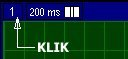Via het snelknopvenster kunnen de offset, gain en de tijdbasis van de geselecteerde signalen in een signaalvenster snel ingesteld worden. Het snelknopvenster is alleen beschikbaar in een signaalvenster van het type Grafisch-xt.
Na 1 muisklik op het vensternummer (altijd in de linker bovenhoek van het signaalvenster) in een signaalvenster komt het snelknopvenster op.
|
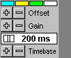 |
SNELKNOP VENSTER Geselecteerde signalen: een wijziging van Offset en Gain wordt alleen toegepast op de geselecteerde signalen. De gekleurde blokjes 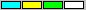boven in het Snelknopvenster verwijzen via de kleur naar de signalen in het signaalvenster. Na een muisklik op een blokje kan een signaal worden geselecteerd of gedeselecteerd. Offset: na klikken op de toets resp. naast Offset schuiven de geselecteerde signalen naar boven resp naar beneden in het signaalvenster (door aanpassing van de venster-bovengrens/ondergrens). Gain: na klikken op de toets resp. naast Gain worden de geselecteerde signalen met een factor 2 groter resp. kleiner weergegeven (door aanpassing van de venster-bovengrens/ondergrens). Timebase: de actueel ingestelde waarde van de timebase (tijdbasis of tijd/divisie) wordt altijd weergegeven (in het vak boven Timebase). Het symbool naast de aangegeven waarde van de Timebase geeft aan of alle samplepunten van het signaal worden weergegeven (symbool ) of dat er sprake is van tijd-expansie (symbool , niet alle samplepunten zijn zichtbaar) of tijd-compressie (symbool , elk samplepunt wordt door meerdere scherm-pixels weergegeven). Na indrukken van de toets resp. naast Timebase wordt de tijdbasis van het signaalvenster vergroot (tijd-compressie, de signalen worden over een langere tijdsperiode in het venster weergegeven, waardoor er minder details zichtbaar zijn) resp. verkleind (tijd-expansie, de signalen worden over een kortere tijdsperiode in het venster weergegeven, waardoor er meer details zichtbaar zijn). Dat gebeurt alleen voor de Timebase van het geselecteerde venster. Het Snelknop Venster verdwijnt weer wanneer de muis over het donkergrijze gedeelte van het Snelknop Venster wordt geschoven. Er kunnen geen andere MIDAC-functies bediend worden zolang het Snelknop Venster actief is ! |
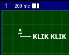De meeste instellingen van een signaalvenster in MIDAC, waarin bijvoorbeeld gemeten signalen grafisch of numeriek weergegeven worden, kunnen in het Instellingen Venster uitgevoerd worden. Dat Instellingen Venster komt op na dubbelklikken op een signaalvenster.
In het Instellingen Venster kunnen de volgende onderdelen van een signaalvenster ingesteld worden.
Dit is een voorbeeld van een Instellingen Venster.
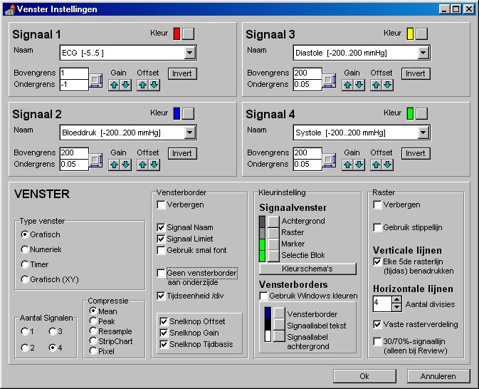
Signaalkeuze en instellingen
|
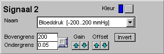 |
Het uiterlijk van het instellingenvenster voor signaalkeuze en daarmee relevante instellingen is afhankelijk van het ingestelde venstertype. Hiernaast staat een voorbeeld van een instelvenster voor het tweede signaal in een signaalvenster wanneer als venstertype grafisch-xt of grafisch-xy is gekozen. Bij Kleur wordt de ingestelde signaalkleur weergegeven. Na indrukken van de knop kan een andere kleur ingesteld worden via een kleurkeuze-dialoog. In het vak naast Naam staat de gekozen signaalnaam (met de maximale en de minimale meetwaarde -bij de maximale resp. minimale ingangsspanning op de AD-kaart- en de ingestelde eenheid). Na indrukken van de knop kan een andere signaalnaam uit een lijstje met alle beschikbare signalen gekozen worden. In het vak naast Bovengrens en Ondergrens staan de ingestelde grenswaarden zoals ze gelden voor dit signaal in het signaalvenster. In de vakken kan desgewenst een andere waarde ingevuld worden. Na indrukken van de knop worden de maximale en de minimale meetwaarde ingesteld als bovengrens/ondergrens. Na indrukken van de knop resp. onder Gain worden de waarden van de bovengrens en ondergrens met een factor 2 verkleind (waardoor het signaal een factor 2 groter wordt weergegeven) resp. vergroot (het signaal wordt met een factor 2 kleiner weergegeven). Na indrukken van de knop resp. onder Offset wordt bij de waarden van de venster-bovengrens en de venster-ondergrens 20% van het verschil tussen deze beide waarden afgetrokken resp. opgeteld. Het signaal verschuift dus in zijn geheel naar de bovenzijde resp. naar de onderzijde van het signaalvenster. Na indrukken van de knop Invert worden de waarden in de vakken voor bovengrens en ondergrens omgewisseld. |
|
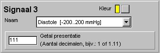 |
Hiernaast staat een voorbeeld van een instelvenster voor het derde signaal in een signaalvenster wanneer als venstertype numeriek is gekozen. Bij Kleur wordt de ingestelde signaalkleur weergegeven. Na indrukken van de knop kan een andere kleur ingesteld worden via een kleurkeuze-dialoog. In het vak naast Naam staat de gekozen signaalnaam (met de maximale en de minimale meetwaarde -bij de maximale resp. minimale ingangsspanning op de AD-kaart- en de ingestelde eenheid). Na indrukken van de knop kan een andere signaalnaam uit een lijstje met alle beschikbare signalen gekozen worden. De inhoud van het vak naast Getalpresentatie is bepalend voor het aantal cijfers dat na de komma wordt weergegeven. De lokatie van de decimale punt in de opgegeven getalwaarde (er kunnen willekeurige letters of cijfers opgegeven worden) is bepalend voor de getalpresentatie. Bijvoorbeeld: 1=geen decimalen; .11= 2 decimalen) |
|
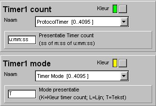 |
Hiernaast staat een voorbeeld van een set van 2 instelvensters in een signaalvenster wanneer als venstertype timer is gekozen. Bij een timer moeten altijd 2 signaalnamen opgegeven worden. In het instelvenster Timer Count is dat de eigenlijke tellerwaarde (bijvoorbeeld de zaagtand output van rekenfunctie MultiTimer) die als getal zichtbaar wordt gemaakt. In het instelvak Timer Mode gaat het om de extra timerfunctie (een getal in de range 0..10; bijvoorbeeld de mode output van timer-rekenfunctie die als protocolfase gebruikt kan worden), die in het numerieke venster zichtbaar is als getalwaarde en/of als een gekleurde onderstreping van de tellerwaarde en/of als kleur van de tellerwaarde. In instelvenster Timer Count wordt bij Kleur de ingestelde kleur van de timerwaarde weergegeven. Na indrukken van de knop kan een andere kleur ingesteld worden via een kleurkeuze-dialoog. (De ingestelde kleur kan vervangen worden wanneer bij Mode presentatie in instelvenster Timer Mode "K" is ingevuld !) Bij Presentatie Timer count kan worden gespecificeerd op welke wijze de tellerwaarde moet worden weergegeven. ss=in seconden (dus als normale tellerwaarde); m:ss=in minuten/seconden; u:mm:ss=in uren/minuten/seconden. In instelvenster Timer Mode wordt bij Kleur de ingestelde kleur van de mode-tekst weergegeven (alleen zichtbaar bij keuze van "T" bij Mode presentatie). Na indrukken van de knop kan een andere kleur ingesteld worden via een kleurkeuze-dialoog Bij Mode presentatie kan een combinatie van de letters "K", "L" en "T" ingevuld worden. Hiermee wordt ingesteld op welke wijze de waarde van de Timer mode zichtbaar gemaakt wordt in een Timervenster. K= de Timer mode presenteert zich als een wisselende kleur van de timer count. L= de Timer mode presenteert zich als een wisselende kleur van een extra onderstreping van de timer count. T= linksboven in het Timervenster staat de tekst "Mode: " aangevuld met de actuele getalwaarde van de Timer mode. Momenteel worden deze kleuren gebruikt voor de Timer mode: 0=LichtGrijs; 1=LichtGroen; 2=Geel; 3=LichtBlauw; 4=Wit; 5=Rood; 6..10=wit. |
Type Venster
|
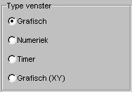 |
Venstertype Grafisch-xt: de amplitude van de gemeten waarde uitgezet tegen de tijd. Maximaal 4 signalen. De signaal-presentatie wordt beïnvloed door de ingestelde compressie. De amplitude van de boven- en ondergrens van het signaalvenster kan ingesteld worden evenals de resolutie van de tijdas. Venstertype Numeriek:de gemeten waarde in getalvorm (met instelbaar aantal cijfers na de komma). Maximaal 4 signalen. Weergegeven wordt de gemiddelde waarde per seconde. De instellingen voor Vensterborder en Raster zijn bij deze keuze niet zichtbaar. Venstertype Timer: de timercount (bijvoorbeeld van een rekenfuntie timer) in getalvorm (presentatie in seconde, in mm:ss of uu:mm:ss). De timer-fase wordt eveneens zichtbaar gemaakt. De getalwaarde wordt 1x per seconde ververst. Maximaal 2 timers in één signaalvenster. De instellingen voor Vensterborder en Raster zijn bij deze keuze niet zichtbaar. Venstertype Grafisch-xy: WORDT NOG NIET ONDERSTEUND. (de amplitude van 2 gemeten signalen tegen elkaar uitgezet. Maximaal 2 xy-presentaties in 1 venster.) |
Aantal Signalen
|
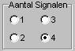 |
Afhankelijk van het ingestelde Venstertype kunnen maximaal 4 signalen in een signaalvenster weergegeven worden. Het maximum aantal wordt automatisch aangegeven na keuze van een Venstertype. Bij Venstertypen Grafisch-xt en Numeriek maximaal 4. Bij Venstertypen Grafisch-xy en Timer maximaal 2 (bij Venstertype Timer staat boven het vak Aantal timers). Het aantal zichtbare Signaal-instelvensters wijzigt automatisch bij een andere keuze van het aantal signalen. |
Compressie
|
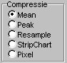 |
Deze instelling beïnvloedt de weergave van een signaal in een signaalvenster van het type Grafisch-xt en Grafisch-xy. Klik hier voor meer informatie over een optimale signaalweergave. |
Vensterborder
|
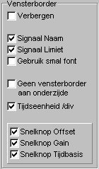 |
Hier kan de opmaak van de border rondom het signaalvenster ingesteld worden wanneer als venstertype is gekozen voor Grafisch-xt of Grafisch-xy. Een instelling kan gewijzigd worden door met de muis te klikken op het vakje naast de naam. De instelling is gekozen wanneer een vinkje in het vakje zichtbaar is. Verbergen: Geen border rondom het signaalvenster. Dat betekent ook dat signaalnamen en sneltoetsen niet zichtbaar zijn. Signaal Naam: De naam van de signalen in het venster wordt in tekstvakken in de border weergegeven. Signaal Limiet: De ingestelde venster-bovengrens/ondergrens van de signalen in het venster worden in tekstvakken in de border weergegeven. Gebruik smal font: Het standaard font voor tekstweergave in de tekstvakken in de border is Arial 8, bijvoorbeeld: 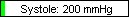. Bij keuze van Gebruik smal font wordt de tekst weergegeven met font ArialNarrow 8, bijvoorbeeld: 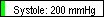. Geen vensterborder aan onderzijde: Alleen een border met tekstvakken aan de bovenzijde van een signaalvenster gebruiken. In dat geval kunnen geen snelknoppen in de border gebruikt worden. Tijdseenheid /div:De ingestelde tijdbasis wordt weergegeven in een tekstvak in de bovenborder, in deze vorm: 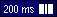. Het symbool naast de aangegeven waarde van de tijdbasis geeft aan of alle samplepunten van het signaal worden weergegeven (symbool ) of dat er sprake is van tijd-expansie (symbool , niet alle samplepunten zijn zichtbaar) of tijd-compressie (symbool , elk samplepunt wordt door meerdere scherm-pixels weergegeven). SNELKNOPPEN: Snelknoppen voor Tijdbasis, Offset en Gain kunnen alleen in de border ingesteld worden wanneer een vensterborder aan de onderzijde van het signaalvenster is ingesteld. (Overigens verschijnt er altijd een venster met alle snelknoppen na 1 muisklik op het vensternummer links in de bovenborder !) Snelknop Offset: In de onderborder staat een vak met 2 snelknoppen , voorafgegaan door de letter O van Offset. Hiermee kan een offset voor alle signalen in het signaalvenster ingesteld worden. (Deze instelling is alleen zichtbaar wanneer een onderborder is ingesteld !) Snelknop Gain:In de onderborder staat een vak met 2 snelknoppen , voorafgegaan door de letter V van Versterking. Hiermee kan de gain voor alle signalen in het signaalvenster met een factor 2 verkleind of vergroot worden. (Deze instelling is alleen zichtbaar wanneer een onderborder is ingesteld !) Snelknop Tijdbasis:In de bovenborder staat een vak met 2 snelknoppen , voorafgegaan door de letter T van Tijdbasis. Hiermee kan de tijdbasis in het signaalvenster gewijzigd worden. (Deze instelling is alleen zichtbaar wanneer een onderborder is ingesteld !) |
Kleurinstelling
|
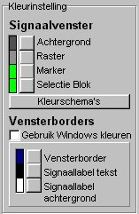 |
Hier kunnen de kleuren van het signaalvenster en de vensterborder gecontroleerd en ingesteld worden. Een andere kleur kan ingesteld worden via een kleurkeuze-dialoog na indrukken van de knop naast een ingestelde kleur. Signaalvenster: De kleur van de Achtergrond, het Raster (grid), de Marker en het Selectieblok kan ingesteld worden. Na indrukken van de knop Kleurschema's komt een venster op met een aantal complete kleurschema's van het Signaalvenster en de 4 signalen. Klik op de kolom met het gewenste kleurschema. 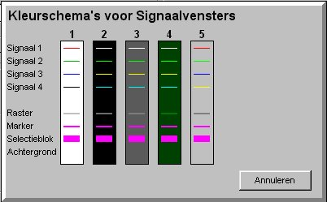 Vensterborders: Gebruik Windows kleuren: Standaard kunnen de kleuren van de border en de tekstlabels naar eigen wens ingesteld worden. Wanneer Gebruik Windows kleuren wordt ingesteld dan wordt het ingestelde Windows-kleurschema voor de border en de tekstlabels in de border gebruikt. De kleuren kunnen niet zelf ingesteld worden. |
Raster
|
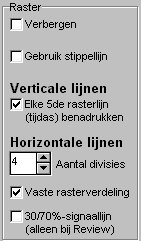 |
Hier kunnen de eigenschappen van het raster (grid) ingesteld worden. Verbergen: Het raster is niet zichtbaar. Gebruik stippellijn: Standaard wordt het raster met doorgetrokken lijnen weergegeven. Bij deze keuze wordt het raster met een stippellijn weergegeven. Verticale lijnen Elke 5de rasterlijn (tijdas) benadrukken: Deze keuze is alleen van belang in de Review-mode van MIDAC. Elke 5de verticale rasterlijn wordt vet weergegeven. Horizontale lijnen Aantal divisies: Het aantal verticale divisies kan hier ingesteld worden. Vaste rasterindeling: Bij een vaste rasterindeling wordt het signaalvenster in een aantal (ingesteld bij Aantal divisies) gelijke horizontale vakken opgedeeld, onafhankelijk van de ingestelde venster-bovengrens/ondergrens. Wanneer gekozen wordt voor geen vaste rasterindeling dan wordt de positionering van de horizontale rasterindeling bepaald door de nullijn van signaal 1. De nullijn wordt in dat geval vet weergegeven. 30/70%-signaallijn: Deze keuze is alleen van belang in de Review-mode van MIDAC en bij keuze van een vaste rasterindeling. Op 30% en 70% van de hoogte van het signaalvenster wordt een horizontale stippellijn getekend, te gebruiken als -3dB-oriëntatielijnen. |
© Instrumentele Dienst. Bijgewerkt op 8-12-1999.